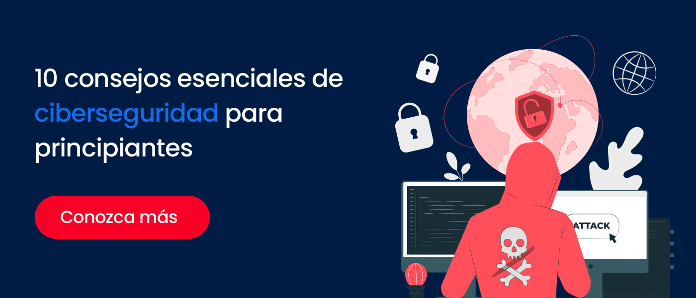

Principales amenazas cibernéticas
Algunas de las amenazas más comunes en el mundo digital son:
- Phishing: Correos o mensajes falsos que intentan engañar al usuario para robar información.
- Malware: Programas maliciosos como virus, troyanos o ransomware que dañan los sistemas.
- Ataques de denegación de servicio (DDoS): Saturan un servidor o red hasta que deja de funcionar.
- Ingeniería social: Técnicas psicológicas para manipular a las personas y obtener datos confidenciales.
- Robo de identidad: Uso no autorizado de información personal para cometer fraudes o delitos.
%20Ciberseguridad%20en%20los%20Gobiernos%3B%20Un%20gran%20desaf%C3%ADo%20en%20el%202023.jpg?height=420&name=36%20(Option%202)%20Ciberseguridad%20en%20los%20Gobiernos%3B%20Un%20gran%20desaf%C3%ADo%20en%20el%202023.jpg)
Consejos para protegerte en línea
- Usa contraseñas seguras con letras, números y símbolos.
- Activa la verificación en dos pasos en tus cuentas importantes.
- No abras correos o enlaces sospechosos.
- Mantén tus dispositivos y programas actualizados.
- Evita conectarte a redes Wi-Fi públicas sin protección.
- Haz copias de seguridad regularmente.
- Instala un antivirus confiable y mantenlo actualizado. 